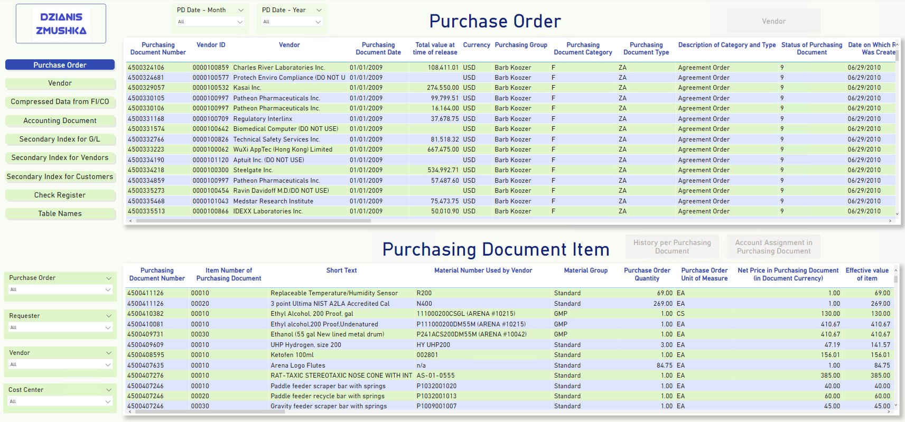
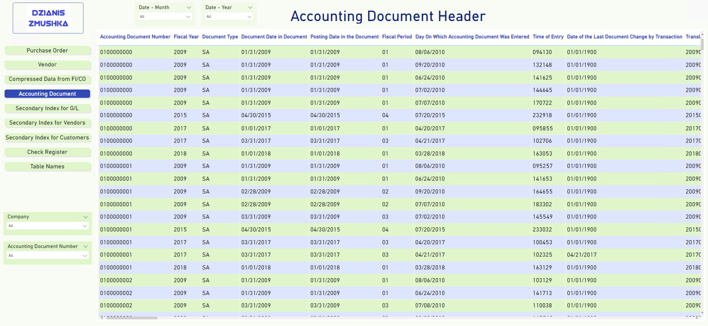

SAP Data Report
| Project Name | BI Platform | Country | Industry | Department | Duration |
|---|---|---|---|---|---|
| SAP Data Report | Power BI | USA | Pharmaceutical | Purchasing Department | 3 months |
One of the main tasks of this project was the migration of SAP data to the Power BI dashboard using SQL. The complexity of the project was that when migrating SAP data to SQL, clusters are divided into tables, tableas are loaded but not transactions that business users worked with. Accordingly, it was necessary to repeat the logic of transactions on the side of Power BI (using DAX).
First of all, the customer was interested in information about purchase orders. Additionally, there were requirements for the reflection of accounting documents, vendors and check register with the possibility of drilling through to other indicators.
About 40 dimensions and 20 measures were used to implement the product.